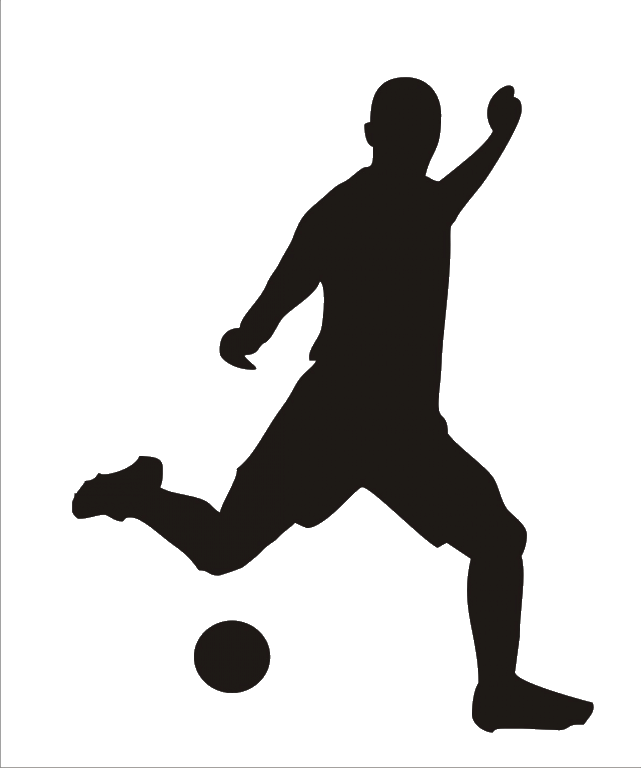

Никита, 27 лет, г.Санкт-ПетербургНачинающий HTML-верстальщик, выпускник базового и продвинутого курсов htmlacademy0,5 года < ОПЫТ < 1 годНавыки: HTML5, CSS3, LESS, JQuery, Grunt, PS в пределах нарезки макетаВ настоящее время - сисадмин, ищущий себя в веб-разработке.